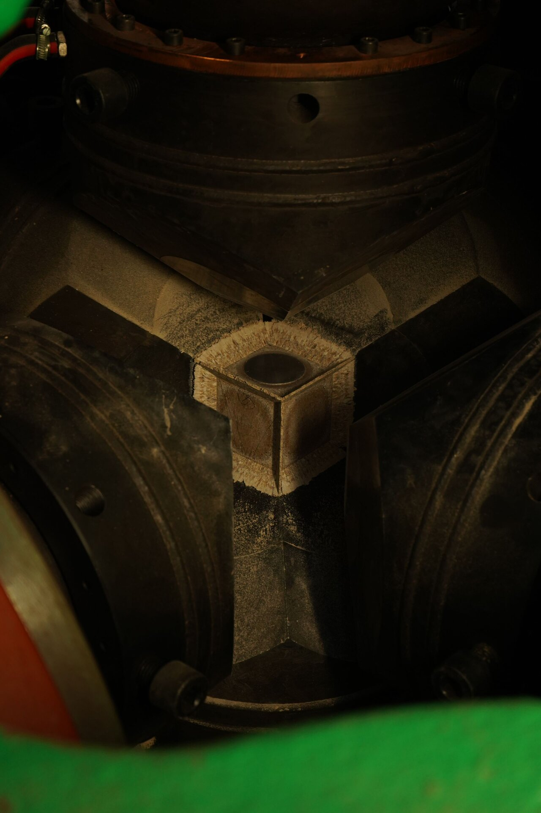
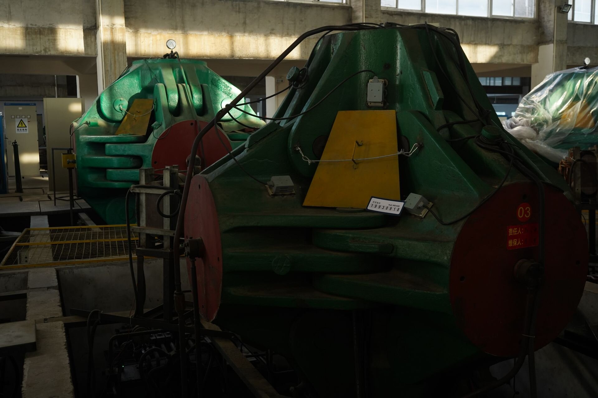

Quick Answers
What are lab-grown diamonds used for beyond jewelry?
Five industrial clusters: thermal management (heat spreaders for AI and RF chips), power electronics (high-voltage devices for EVs and grid infrastructure), quantum technology (nitrogen-vacancy center sensors and qubits), optics and electrochemistry (laser windows, synchrotron optics, boron-doped electrodes for water treatment), and the traditional volume backbone of cutting, grinding, and drilling tools [3][7][8].
Why is diamond suited to electronics?
Diamond has the highest known thermal conductivity (~2,200 W/m·K, roughly five times copper), an ultra-wide 5.47 eV bandgap, a breakdown field above 10 MV/cm, and the highest Baliga figure of merit of any semiconductor material — in theory outperforming silicon, SiC, and GaN simultaneously [4][5][10].
How big is the industrial lab-grown diamond market?
Estimates vary by scope: the total synthetic diamond market is projected at $27–29 billion for 2026, growing to $38–47 billion by 2031–2036 [1][2][6][9]. Within it, the diamond power semiconductor segment alone is forecast to grow from $1.8 billion (2025) to $7.2 billion (2034) at a 16.7% CAGR [4].
Does the industrial diamond boom affect memorial diamond brands?
Yes, in three ways: it anchors "lab-grown" as an engineering-grade term rather than a marketing one, it pulls synthesis capacity and process control forward (most HPHT capacity growth is now driven by industrial demand), and it widens the gap between manufacturers who control their own presses and those who merely trade stones [1][3].
Introduction: The Quiet Industrial Pivot
For two decades, "lab-grown diamond" was shorthand for one thing: a gemstone. The public narrative was entirely about jewelry — engagement rings, price parity with mined stones, and a retail market that grew explosively and then, after 2020, collapsed in price by 50–80% as supply flooded in [3].
But while the gem market commoditized, something quieter and more consequential happened in the background. The same synthesis platforms that produce gemstones — HPHT presses and CVD reactors — began supplying a different customer entirely: engineers. Diamond is now being specified into AI chip cooling, electric-vehicle power electronics, quantum sensors, laser optics, and wastewater treatment systems, and more than $4 billion of committed capital flowed into technology-grade diamond manufacturing between 2024 and 2026 alone [3].
For a memorial diamond brand, this industrial shift is not a distant curiosity. It is reshaping the manufacturing ecosystem you buy from, the credibility of the phrase "lab-grown" with end customers, and the economics of synthesis capacity worldwide. This article maps the industrial frontier, separates substance from hype, and draws the lines that matter for B2B buyers in the memorial segment.
The Material Case: Engineered for Extremes
Every industrial application traces back to the same physical fact set. Diamond is a semiconductor with an indirect bandgap of 5.47 eV — nearly double that of silicon carbide (3.26 eV) and more than triple that of silicon (1.12 eV) [4][5]. It conducts heat at up to ~2,200 W/m·K, the highest of any known bulk material, roughly five times copper and five times SiC [4][10]. Its critical breakdown field exceeds 10 MV/cm, about three times SiC's, and its hole mobility exceeds 2,000 cm²/V·s [5]. The engineering fundamentals behind these numbers, and how they are controlled in production, are covered in our technology overview.
| Property | Diamond | Silicon | SiC | GaN |
|---|---|---|---|---|
| Bandgap | 5.47 eV | 1.12 eV | ~3.26 eV | ~3.4 eV |
| Thermal conductivity | ~2,200 W/m·K | ~150 W/m·K | ~4.9 W/cm·K | ~1.3 W/cm·K |
| Critical breakdown field | >10 MV/cm | 0.3 MV/cm | ~3 MV/cm | ~3.3 MV/cm |
| Baliga figure of merit | Highest of all semiconductors | Baseline | ~50× Si | Between Si and SiC |
Sources: [4][5][10]. The Baliga figure of merit measures how efficiently a material can handle power switching; diamond's theoretical advantage is orders of magnitude above every commercial wide-bandgap material [4][5].
The engineering consequence: a diamond device can block higher voltage, run hotter, and dissipate more heat per unit area than anything silicon, SiC, or GaN can manage — which is why, despite costing far more per wafer, diamond keeps appearing in roadmaps for the extreme end of power and RF electronics [4][8].
The honest caveats belong in the same paragraph. Diamond has no established shallow n-type dopant, large-area defect-free wafers are not yet routine, and commercial active diamond devices remain at the prototype-to-early-commercial stage, with laboratory diodes demonstrating breakdown voltages above 1,000 V as of 2025 [4][5]. The near-term industrial revenue is real but concentrated in passive and specialty uses — thermal substrates, optics, electrodes, and abrasives — rather than in diamond transistors [5].
Five Industrial Frontiers

1. Thermal management — the nearest-term revenue
The most commercially mature non-gem use is also the least visible: heat. As AI accelerator power density and RF amplifier output keep climbing, package-level heat dissipation has become a first-order design constraint. Diamond heat spreaders and GaN-on-diamond structures exploit the one property no competing material can match — thermal conductivity up to ~2,200 W/m·K — to pull heat out of high-power chips [3][5]. Industry analyses identify thermal management substrates for GaN and SiC devices as diamond's primary near-term application, ahead of any active device [5]. This is the segment driven directly by the AI build-out, and it is where much of the 2024–2026 capital commitment is landing [3].
2. Power electronics — the strategic prize
For power conversion, diamond's theoretical figures of merit are extraordinary: blocking voltages of 10 kV to 100 kV at on-resistances orders of magnitude below SiC, operation above 400 °C without leakage-driven failure, and power densities above 1 kW/cm² that would destroy silicon [4]. Governments in the US, Japan, the EU, and South Korea have funded wide-bandgap programs accordingly [4], and the diamond power semiconductor market is forecast to grow from $1.8 billion in 2025 to $7.2 billion by 2034 at a 16.7% CAGR — nearly triple the growth rate of the overall synthetic diamond market [4]. Prototype diamond Schottky diodes have demonstrated forward drops below 1.5 V with reverse breakdown fields above 3 MV/cm [4]. The patent landscape is active: RFHIC, Element Six, Akash Systems, AIST, and Stanford lead assignee counts in the space [5].
3. Quantum technology — the high-precision niche
Diamond's nitrogen-vacancy (NV) center — a lattice defect whose electron spin can be read and controlled at room temperature — has made diamond the leading solid-state platform for quantum sensing [7][8]. Commercial quantum-grade diamond is already a real product category: Element Six sells engineered NV-center material under its DNV series for magnetometry, medical imaging, neutron detection, and quantum computing work [7]. IBM's NV-center quantum processor work has opened pathways toward medical imaging and sensing applications [1]. The deliberate defect engineering behind NV centers is the same discipline — pushed to an extreme — described in our analysis of doping and color control in HPHT growth. This is a small-volume, ultra-high-specification market, but it sets the world's highest bar for crystal purity and defect control — and that bar raises the whole industry.
4. Optics and electrochemistry — the quiet workhorses
Diamond is transparent across an exceptionally wide spectral range, is chemically inert, and has the highest hardness of any optical material — a natural fit for high-power laser windows, IR optics, and synchrotron beamlines [3]. Separately, boron-doped diamond (BDD) electrodes exploit the widest solvent window of any electrode material to break down PFAS ("forever chemicals"), generate ozone, and treat industrial wastewater — a growing application as environmental regulation tightens [3][7]. These are established, revenue-generating niches rather than promises.
5. The volume backbone: grit, bits, and tools
None of the above would exist at current prices without the oldest industrial use. Cutting, grinding, drilling, and polishing still dominate synthetic diamond by volume: rough stones accounted for 66% of market revenue in 2025, with applications from highway resurfacing (a single project can consume up to 200 kg of diamond grit) to polycrystalline diamond compact drill bits, which demonstrated an 18% faster drilling rate in Permian Basin trials during 2025 [1]. Average selling prices for industrial rough run $80–120 per carat — a volume business where HPHT's low unit cost is the decisive advantage [1][6]. This segment funds the manufacturing base on which everything else sits.
The Market Bifurcation, in Numbers
The strategic story is a split. On one side, gem-quality lab-grown diamond has commoditized: prices collapsed 50–80% from 2020 levels as Chinese and Indian capacity scaled, a collapse crystallized when De Beers shut its Lightbox jewelry brand in May 2025 [3]. On the other side, technology-grade diamond is attracting premium investment and premium specifications. We mapped the demand-side half of this split in our 2026 industry trends analysis; what follows is the supply-side view.
| Segment | Scale / forecast | Growth | Source |
|---|---|---|---|
| Total synthetic diamond market | $27–29B (2026) → $38–47B (2031–2036) | 5–8% CAGR | [1][6][9] |
| Lab-grown diamond overall (incl. jewelry) | $33.5B (2026) → $91.9B (2034) | 13.4% CAGR | [2] |
| Diamond power semiconductors | $1.8B (2025) → $7.2B (2034) | 16.7% CAGR | [4] |
| Polished diamond for non-jewelry uses | Substrate / heat-spreader / coating applications growing at 9.41% CAGR through 2031 | Outpaces jewelry uses | [1] |
| Rough industrial (abrasives, drilling) | 66% of 2025 revenue; $80–120/ct ASP | Volume-stable | [1] |
Two structural facts fall out of this table. First, the growth premium sits in technology-grade material: the diamond power semiconductor segment's 16.7% CAGR is roughly double the overall market's, and non-jewelry polished applications now outgrow jewelry applications in percentage terms [1][4]. Second, manufacturing technology is splitting by application: HPHT is expected to represent ~61.9% of the manufacturing process segment in 2026, dominant in volume production of grit and gem rough, while CVD establishes the advantage in electronics and specialty applications where large-area substrate purity matters [6]. Analysts expect the two processes to coexist along exactly those lines through 2036 [6]. We compared the two processes for memorial production specifically in our HPHT vs CVD analysis.
Which process wins which market, at a glance?
HPHT wins where unit cost and bulk crystal purity drive the economics: abrasives, drilling grit, and gem rough. CVD wins where wafer-scale area and ppm-level doping control drive the specification: power electronics substrates, quantum-grade NV material, and optical windows. Memorial diamond sits on the HPHT side of that line — which is why press ownership, not reactor access, is the competence to vet in a supplier. For the full process comparison, see HPHT vs CVD for memorial diamonds.
Why a Memorial Diamond Brand Should Care
None of this is abstract for a pet-memorial or funeral brand choosing a manufacturing partner. Four consequences are concrete.
1. "Lab-grown" is becoming an engineering credential, not a marketing line. When end customers see diamond specified into AI hardware and quantum sensors, the phrase "laboratory-grown" acquires the aura of precision manufacturing rather than of imitation. Brands selling memorial diamonds benefit directly from that normalization — every industrial deployment is free third-party validation of the synthesis process behind your product [3][5].
2. Capacity competition now runs through industry, not jewelry. Because industrial demand is the growth engine, gem and memorial production increasingly competes with technology buyers for press time and skilled operators [1][3]. Manufacturers who own their equipment and control their process — rather than trading stones bought on the open market — are structurally better positioned to hold turnaround commitments. When you vet a supplier, "who owns the presses" is no longer a technicality; it is a supply-security question. Our factory-audit framework is built around exactly that question.
3. Process control has matured — and partners benefit. The precision now routine in technology-grade growth (purity specification, doping control, defect management) has dragged the whole field's process control upward [5]. Mature, instrumented HPHT operations translate that discipline into consistent colorless output — the E–H range, cut to Ideal proportions, verified by third-party inspection — which is exactly what a brand needs for repeatable retail inventory.
4. The HPHT/CVD split maps onto supplier competence. Electronics-grade work is overwhelmingly CVD; volume HPHT dominates grit and gem rough [5][6]. A memorial diamond supplier working in HPHT sits on the volume-and-cost side of the industry, with press fleets and catalyst-chemistry expertise — a different competence profile from a CVD wafer house. Both are legitimate; they are simply different trades, and a buyer should know which trade a supplier actually practices day to day. We compared six manufacturers' real operating models in our 2026 B2B comparison.
Where Bio-Carbon Fits in This Map
It is worth stating plainly where a bio-carbon memorial diamond sits in this industrial landscape: at the intersection of mature HPHT volume manufacturing and the highest emotional specification in the gem trade.

Our own operation is a working example of the HPHT side. BioGem Lab runs its own press fleet in Luoyang — inside the Henan-region HPHT manufacturing cluster that industry analysts credit with China's dominant position in industrial diamond production [1][6] — growing colorless diamonds in the E–H range at roughly 5.5 GPa and 1,450 °C, with a published ~60-day production cycle from sample receipt to finished stone. We grow gem-grade material only; we do not supply technology-grade or industrial diamond. But we buy equipment, catalyst chemistry, and process discipline from the same industrial base described above, and our carbon pre-extraction method is covered by Chinese invention patent ZL 2010 1 0565778.9. Our manufacturing page documents the production line behind those numbers.
The point for a partner is not that memorial diamonds are industrial products. It is that the credibility of the manufacturing behind them now has independent, industrial-scale proof — and that a manufacturer rooted in the HPHT production ecosystem, with its own equipment and a written cycle time, is a categorically different supplier from one assembling outsourced stones.
Practical Takeaways for B2B Buyers
1. Treat "lab-grown" as a manufacturing claim, and ask for the factory behind it. Press ownership, catalyst chemistry, and written cycle times separate manufacturers from traders — the industrial boom has made this gap wider, not narrower [1][3].
2. Prefer suppliers with stable colorless output. The technology-grade market has pushed purity and repeatability standards up industry-wide; consistency in the E–H range is the gem-side expression of that maturity [5].
3. Do not pay gem prices for a story instead of a process. Traceability documentation, third-party inspection, and a named patent are verifiable; "magical transformation" marketing is not. Our traceability runs through CCIC inspection and labeling, with ILDA third-party platform verification for end customers.
4. Plan around real cycle times. Industrial demand is tightening capacity across the synthesis industry [3]; a published ~60-day cycle with late-delivery accountability is a procurement feature, not a slogan.
Frequently Asked Questions
Is the industrial diamond market bigger than the jewelry market?
By volume, industrial uses dominate — rough stones for cutting and drilling alone accounted for 66% of synthetic diamond revenue in 2025 [1]. By value, jewelry still leads, but the growth premium is on the industrial side: diamond power semiconductors are forecast at a 16.7% CAGR versus 5–8% for the overall market [1][4][6].
Are diamond semiconductors commercially available today?
Partially. Commercial revenue today is concentrated in passive and specialty uses — thermal substrates, quantum-grade NV-center material, optics, and electrodes [5][7]. Active power devices (diodes, transistors) are at prototype-to-early-commercial stage, with laboratory devices demonstrating breakdown voltages above 1,000 V [4][5].
Does BioGem Lab manufacture industrial or technology-grade diamonds?
No. We manufacture gem-grade, colorless (E–H) memorial diamonds from biological carbon using HPHT synthesis, exclusively for B2B white-label partners. We do not supply industrial grit, semiconductor substrates, or quantum-grade material — but we operate within the same HPHT manufacturing ecosystem described in this article.
Why does HPHT dominate volume production while CVD leads in electronics?
HPHT scales cheaply for high-purity bulk crystal — ideal for grit and gem rough — and is expected to hold ~61.9% of manufacturing volume in 2026 [6]. CVD grows large-area substrates with precisely controlled purity and doping, which electronics and quantum applications require [5][6]. The two processes are complementary, not competing. For what the split means for memorial production, see our HPHT vs CVD analysis.
What does the industrial diamond boom change for a pet-memorial retailer?
Mainly the vocabulary and the vendor landscape. "Lab-grown" now carries engineering credibility from AI, EV, and quantum deployments — free third-party validation for your product category [3][5]. And capacity competition means supplier selection matters more: choose manufacturers who own their equipment and can commit to written cycle times.
References
Market figures retrieved October 2026. Sources are industry research organizations, academic publications, and manufacturer documentation.
- Mordor Intelligence — Synthetic Diamond Market Size & Industry Trends Forecast, 2031. https://www.mordorintelligence.com/industry-reports/synthetic-diamond-market
- Fortune Business Insights — Lab Grown Diamond Market Size, Share, Growth Report [2034]. https://www.fortunebusinessinsights.com/lab-grown-diamond-market-110569
- Future Markets Inc — Advanced Diamond Materials and Technology Market Report 2026-2036. https://www.futuremarketsinc.com/advanced-diamond-materials-technology-market-2026-2036/
- Dataintelo — Diamond Power Semiconductor Market Research Report 2034. https://dataintelo.com/report/diamond-power-semiconductor-market
- PatSnap — Diamond Semiconductor Power Device Technology 2026. https://www.patsnap.com/resources/blog/rd-blog/diamond-semiconductor-power-device-technology-2026/
- Future Market Insights — Synthetic Diamond Market Outlook 2026-2036. https://www.futuremarketinsights.com/reports/synthetic-diamond-market
- Element Six — Next-Generation Applications (DNV™ quantum-grade CVD diamond product families). https://www.e6.com/products/next-generation-applications
- arXiv 2605.04942 — From Defects to Devices: Design Guidelines for Diamond-Based Solar Cells and Single-Dopant Diodes. https://arxiv.org/html/2605.04942
- ResearchAndMarkets — 2026 Synthetic Diamond Market Outlook: Size, Share, Growth Trends and Forecast 2025-2034. https://www.researchandmarkets.com/reports/5687653/2025-synthetic-diamond-market-outlook-report
- Wiley Advanced Materials Interfaces — Formation of Q-Carbon Nanoballs and Nanodiamonds (material property review values). https://advanced.onlinelibrary.wiley.com/doi/10.1002/admi.202500614
Li Lihua — Chief Scientist
Patent inventor ZL 201010565778.9. View profile →
Put an Industrial-Grade Supply Chain Behind Your Brand
Own presses, a written ~60-day cycle, and a named patent — verify the record, then talk to us. We reply within 24 hours.
Related Articles
Top Memorial Diamond Manufacturers: A B2B Buyer's Comparison (2026)
Six memorial diamond companies compared on turnaround, colors, certifications, minimums, and business model — with every figure sourced to an official website.
Factory Audit: How to Vet a Memorial Diamond Manufacturer
The six-area on-site checklist, the remote audit protocol, and the red flags that should end the conversation with a memorial diamond manufacturer immediately.
Memorial Diamond Industry Trends 2026: A Data-Driven Market Analysis
Demand-side market data for the memorial diamond industry in 2026 — growth drivers, pricing pressure, and the segmentation reshaping the supply chain.